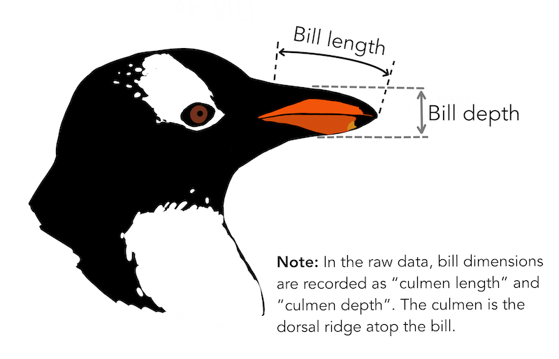

print("Helllo world!")Herramientas para construir gráficas
IN2039: Visualización de Datos
Agenda
R Software

ggplot2

Estas diapositivas están basadas en material disponible en https://coursekata.org/
R software
R es un lenguaje de programación estadística.
Es gratuito!
Te permite crear gráficos y hacer computación estadística.
Se puede extender con paquetes (librerías) desarrolladas por otros usuarios.
Para hacer gráficos o visualizaciones se tiene que usar la computadora y programas especiales. Hay muchos como Python tableu, o incluso, excel. Sin embargo los mas bonitos son los de R.
El conocer r te ayudara a tu CV porque, después de este curso, puedes poner conocimiento básico de analysis de datos con R.
R Studio
R Studio es una interfaz conveniente para R llamada IDE (integrated development environment). Comúnmente, yo digo “Escribo código R en RStudio”
R Studio no es un requisito para programar con R, pero los programadores y científicos de datos de R lo utilizan con mucha frecuencia.
Google Colab
Plataforma de colaboración en la nube gratuita de Google para la creación de documentos de Python o R.
Ejecuta R y colabora en notebooks de Jupyter de forma gratuita.
Aprovecha el poder de la GPU de forma gratuita para acelerar tus proyectos de ciencia de datos.
Guarda y carga fácilmente tus notebooks en Google Drive.

Probemos un comando en R
¿Qué crees que suceda si ejecutamos este comando?
Probemos un comando en R
¿Qué crees que suceda si ejecutamos este comando?
print("Helllo world!")[1] "Helllo world!"Probemos otro comando
¿Qué crees que suceda si ejecutamos este comando?
sum(1, 5, 10)Probemos otro comando
¿Qué crees que suceda si ejecutamos este comando?
sum(1, 5, 10)[1] 16También puedes usar R como una calculadora básica.
5 + 1[1] 610 - 3[1] 72 * 4[1] 89 / 3[1] 3Comentarios
A veces escribimos cosas en la ventana de codificación de R que queremos que R ignore. Estos se llaman comentarios y comienzan con #.
. . .
R ignorará los comentarios y simplemente ejecutará el código.
# puedes poner lo que sea despues de #
# por ejemplo... blah blah blahSi desea escribir un comentario que ocupe más de una línea, es una buena idea poner un # al principio de cada línea.
Introducción a funciones en R
Una de las mejores cosas de R es que hay muchos comandos integrados que puedes usar. Éstas se llaman funciones.
. . .
Las funciones tienen dos partes básicas:
La primera parte es el nombre de la función (por ejemplo,
sum).La segunda parte es la entrada a la función, que va dentro del paréntesis (
sum(1, 5, 15)).
R es exigente
R, al igual que todos los lenguajes de programación, es muy, muy exigente. Por ejemplo, si escribes
sum(1, 100)[1] 101te dirá la respuesta, 101.
. . .
Pero si escribes
Sum(1, 100)Error in Sum(1, 100): could not find function "Sum"con la “s” en mayúscula, ¡actuará como si no tuviera idea de lo que está hablando!
lo mismo si olvidas incluir un parentesis
Guarda tu trabajo en objetos de R
Prácticamente cualquier cosa, incluidos los resultados de cualquier función de R, se puede guardar en un objeto.
Esto se logra mediante el uso de un operador de asignación, que se parece a una flecha (<- o =).
. . .
Puede inventar cualquier nombre que desees para un objeto R. Sin embargo, hay dos reglas básicas para esto:
- Tiene que ser diferente del nombre de una función en R.
- Tiene que ser lo más específico posible.
Por ejemplo,
# Este código asignará el numero 18 al objeto llamado mi_numero_favorito
mi_numero_favorito = 18Después de ejecutar este código, no sucede nada. Pero si lo ejecutamos el objeto por si solo, podremos ver lo qua hay en el.
mi_numero_favorito = 18
mi_numero_favorito[1] 18También puedes usar print(mi_numero_favorito).
Vectores
Hasta ahora hemos utilizado objetos R para almacenar un solo número. Pero en estadística estamos tratando con variación, que por definición significa más de un número.
. . .
Un objeto R también puede almacenar un conjunto completo de números, llamado vector.
Puedes pensar en un vector como una lista de números (o valores).
. . .
La función c() se puede utilizar para combinar una lista de valores individuales en un vector.
puedes pensar que el c es por combinar
Por ejemplo
Este código crea dos vectores
mi_vector = c(1,2,3,4,5)
mi_vector_2 = c(10,10,10,10,10)Veamos su contenido
mi_vector[1] 1 2 3 4 5mi_vector_2[1] 10 10 10 10 10Operaciones
Podemos hacer operaciones simples con vectores. Por ejemplo, podemos multiplicar todos los elementos de un vector por 100.
mi_vector = c(1, 2, 3, 4, 5)
100*mi_vector[1] 100 200 300 400 500A pesar de que multiplicaste el vector por un valor, este no se modifica.
mi_vector[1] 1 2 3 4 5Mini-actividad (solo mode)
- Escribe código para dividir el vector
mi_vectorpor 2. - Guarda el resultado en un nuevo vector llamado
mi_nuevo_vector. - Prueba el siguiente comando
sum(mi_nuevo_vector). ¿Qué obtuviste?
08:00
Indexación
Podemos indexar una posición en el vector usando corchetes con un número como este: [1].
Entonces, si quisiéramos imprimir el contenido de la primera posición en mi_vector, podríamos escribir
mi_vector[1][1] 1Un poco más sobre objetos en R
Puedes pensar en los objetos R como depósitos que contienen valores.
Un objeto R puede contener un solo valor o puede contener un grupo de valores (como en el caso de un vector).
Hasta ahora, sólo hemos puesto números en objetos R.
. . .
Los objetos R en realidad pueden contener tres tipos de valores: números, caracteres y valores booleanos.
Valores numéricos
Si R sabe que estás usando números, puede hacer muchas cosas con ellos. Hemos visto, por ejemplo, que R puede realizar operaciones aritméticas con números: suma, resta, multiplicación y división.
# Aquí hay dos formas de crear un vector numérico con los
# números del 1 al 10.
mi_num_1 = c(1,2,3,4,5,6,7,8,9,10)
mi_num_2 = 1:10Obtenemos lo mismo.
mi_num_1 [1] 1 2 3 4 5 6 7 8 9 10mi_num_2 [1] 1 2 3 4 5 6 7 8 9 10Valores de carácter
Los caracteres se componen de texto, como palabras u oraciones. Un ejemplo de un vector con caracteres como elementos es:
. . .
muchos_holas = c("hi", "hello", "hola", "bonjour", "ni hao", "merhaba")
muchos_holas[1] "hi" "hello" "hola" "bonjour" "ni hao" "merhaba". . .
Es importante saber que los números también se pueden tratar como caracteres, dependiendo del contexto.
Por ejemplo, cuando 20 está entre comillas ("20") se tratará como un valor de carácter, aunque incluya un número entre comillas.
Valores booleanos
Los valores booleanos son TRUE o FALSE.
Quizás tengamos una pregunta como:
- ¿El primer elemento del vector
muchos_holases"hola"?
. . .
Podemos pedirle a R que averigüe y devuelva la respuesta TRUE o FALSE.
muchos_holas[1] == "hola"[1] FALSEOperadores lógicos
La mayoría de las preguntas que le pedimos a R que responda con a TRUE o FALSE involucran operadores de comparación como >, <, >=, <= y ==.
El doble == signo comprueba si dos valores son iguales. Incluso existe un operador de comparación para comprobar si los valores no son iguales: !=.
Por ejemplo, 5 != 3 es una declaración TRUE.
Mini-actividad (solo mode)
- Lee este código y predice su respuesta. Después, corre el código en Google Colab y valida si estabas en lo correcto.
A = 1
B = 5
compare = A > B
compare- Repite lo mismo con el siguiente código.
mis_numeros = 1:10
mis_booleanos = mis_numeros >= 5
mis_numeros
mis_booleanos10:00
Lista de operadores lógicos comunes
>(mayor que)>=(mayor o igual a que)<(menor que)<=(menor o igual a que)==(igual a)!=(diferente de)
La cultura de programación: Prueba y error
La mejor manera de aprender a programar es probar cosas y ver qué sucede. Escribe un código, ejecútalo y piensa por qué no funcionó.
Hay muchas maneras de cometer pequeños errores en la programación (por ejemplo, escribir una letra mayúscula cuando se necesita una letra minúscula).
A menudo tenemos que encontrar estos errores mediante prueba y error.
Librerías en R
Los paquetes son las unidades fundamentales del código R reproducible. Incluyen funciones R re-utilizables, la documentación que describe cómo usarlas y datos de muestra.
En septiembre de 2020, hay más de 16, 000 paquetes disponibles en CRAN (la red integral de archivos R)
Trabajaremos mayormente con las librerías
readxl,dplyr,ggplot2, yggformula.
¿Cómo cargar datos en R?
Organización de datos
En estadística, organizamos los datos en filas y columnas.
Condition Age Wt Wt2
1 Uninformed 35 136 135.8
2 Uninformed 45 162 161.8
3 Informed 52 117 116.8
4 Informed 29 184 182.8
5 Uninformed 38 134 136.6
6 Informed 39 189 183.2. . .
Las filas son los casos muestreados. En este ejemplo, las filas son amas de llaves de diferentes hoteles. Hay seis filas, por lo que hay seis amas de casa en este conjunto de datos.
. . .
Dependiendo del estudio, las filas podrían ser personas, estados, parejas, ratones, cualquier caso del que tomes una muestra para estudiarlo.
Las columnas representan variables o los atributos de cada caso que se midieron.
Condition Age Wt Wt2
1 Uninformed 35 136 135.8
2 Uninformed 45 162 161.8
3 Informed 52 117 116.8
4 Informed 29 184 182.8
5 Uninformed 38 134 136.6
6 Informed 39 189 183.2. . .
En este estudio, se informó o no a las amas de llaves que su trabajo diario de limpieza de habitaciones de hotel equivalía a hacer ejercicio adecuado para una buena salud.
. . .
Entonces una de las variables, Condition, indica si fueron informados de este hecho o no.
Existen otras variables como la edad del ama de llaves (Age), el peso antes de iniciar el estudio (Wt), y su peso al final del estudio (Wt2, medido cuatro semanas después).
Por lo tanto, los valores en cada fila representan los valores de ese caso particular en cada una de las variables medidas.
Condition Age Wt Wt2
1 Uninformed 35 136 135.8
2 Uninformed 45 162 161.8
3 Informed 52 117 116.8
4 Informed 29 184 182.8
5 Uninformed 38 134 136.6
6 Informed 39 189 183.2¿Cuántas variables hay en este conjunto de datos?
Cargar datos en R
En este curso, asumiremos que los datos están almacenados en un archivo Excel con la organización anterior. Como ejemplo, usemos el archivo prenguins.xlsx.


El archivo debe de ser previamente cargado en Google Colab.
Librería readxl
Para cargar datos en R, usaremos la librería llamada readxl. Primero, debes de instalar esta librería en R utilizando el comando install.packages("readxl")
Una vez instalada la librería, la cargamos en R usando el siguiente comando.
library(readxl)El siguiente código muestra como leer los datos en el archivo penguins.xlsx en R.
penguins_data <- read_excel("penguins.xlsx")
# Imprime las primeras 6 filas de los datos.
head(penguins_data)# A tibble: 6 × 8
species island bill_length_mm bill_depth_mm flipper_length_mm body_mass_g
<chr> <chr> <dbl> <dbl> <dbl> <dbl>
1 Adelie Torgersen 39.1 18.7 181 3750
2 Adelie Torgersen 39.5 17.4 186 3800
3 Adelie Torgersen 40.3 18 195 3250
4 Adelie Torgersen NA NA NA NA
5 Adelie Torgersen 36.7 19.3 193 3450
6 Adelie Torgersen 39.3 20.6 190 3650
# ℹ 2 more variables: sex <chr>, year <dbl>ggplot2
ggplot2
- ggplot2 es uno de los mejores paquetes gratuitos para construir gráficas.
- Es parte de una colección de paquetes de ciencia de datos llamado tidyverse.
- Está basado en la Gramática de las Gráficas.
- https://ggplot2-book.org/
Instalación
- Instala la librería usando el comando
install.packages("ggplot2")
- Instala una librería auxiliar
install.packages("ggformula")
3. Carga ambas librerías en R usando el siguiente código.
library(ggplot2)
library(ggformula)La estructura de ggplot
ggplot tiene una estructura para crear gráficas por pasos.
gf_PLOTTYPE(Variable2 ~ Variable1, data = my_data, color = ~Variable3, shape = ~Variable4)
+ labs(title, subtitle, caption, x, y, color, shape)
+ more_options()
Ejemplo
¿Existe alguna diferencia entre la longitud y profundidad del pico de las diferentes especies de pingüinos?

Ejemplo
¿Existe alguna diferencia entre la longitud y profundidad del pico de las diferentes especies de pingüinos?
gf_point(bill_length_mm ~ bill_depth_mm, data = penguins_data,
color = ~species) 
Ejemplo
Ejemplo
gf_point(bill_length_mm ~ bill_depth_mm, data = penguins_data,
color = ~species) + labs(title = "Profundidad y longitud del pico",
subtitle = "Dimensiones para pingüinos en Adelie,
Chinstrap, and Gentoo",
x = "Profundidad del pico (mm)", y = "Longitud del pico (mm)",
color = "Especie") + scale_color_viridis_d()
Mini-actividad (solo mode)
Accede a la siguiente liga:
https://colab.research.google.com/drive/1c-sy5yQY1DwgaZAI6YnDLMTEYMpLCWyX?usp=sharing
Copia el archivo Google Colab en tu drive.
Contesta las preguntas.